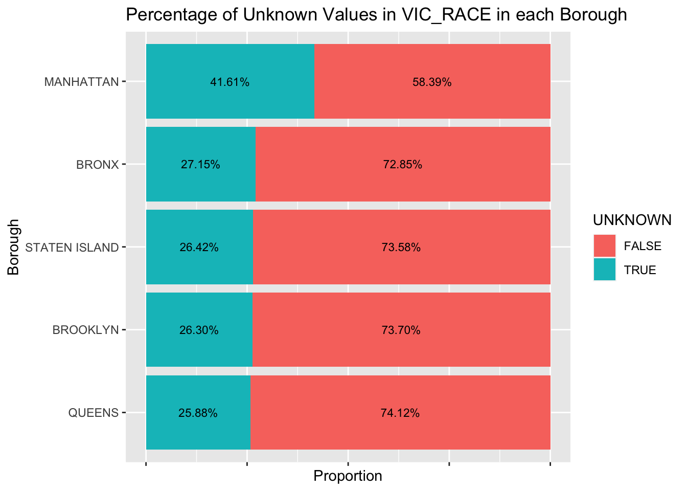

Chapter 3 Data
3.1 Sources
As discussed in 2.2, data is downloaded from https://data.cityofnewyork.us/Public-Safety/NYPD-Complaint-Data-Current-Year-To-Date-/5uac-w243.
3.2 Cleaning / transformation
The format of dataset is described in section 2.3. In this section, we want to do some cleaning and transformation to the raw dataset to make it tidy.
We transform the type of columns to match it’s description. For example, we transform the type of ADDR_PCT_CD to numeric, as it describes the precinct in which the incident occurred. Also, we transform the type of CMPLNT_FR_DT into date, as it describes exact date of occurrence for the reported event.
We drop the columns carrying the same information. For example, Lat_Lon.Latitude is exactly the same as Lat_Lon.Latitude, and Lat_Lon.Longitude is identical to Longitude. Moreover, New Georeferenced Column is just the combination of Latitude and Longitude. Therefore, we drop Lat_Lon and New Georeferenced Column in our dataset.
we drop the unreasonable rows. For example, there are crimes starting at year 1011, which we believe is a mistake. In addition, in the suspect’s and victim’s ages, there are negative values. So we drop the rows with such mistakes.
We factorize some variables. For example, ADDR_PCT_CD describes the precinct in which the incident occurred, so instead of integer, it should be factor. Moreover, some factors are ordinal, like LAW_CAT_CD, it describes the level of offense: felony, misdemeanor, violation, and SUSP_AGE_GROUP, which is the suspect’s age group.
After cleaning and transforming, the description and the class of each column is shown in the table below:
| Colname | Description | Class |
|---|---|---|
| ADDR_PCT_CD | The precinct in which the incident occurred | factor |
| BORO_NM | The name of the borough in which the incident occurred | factor |
| CMPLNT_FR_DT | Exact date of occurrence for the reported event (or starting date of occurrence, if CMPLNT_TO_DT exists) | Date |
| CMPLNT_FR_TM | Exact time of occurrence for the reported event (or starting time of occurrence, if CMPLNT_TO_TM exists) | character |
| CMPLNT_NUM | Randomly generated persistent ID for each complaint | character |
| CMPLNT_TO_DT | Ending date of occurrence for the reported event, if exact time of occurrence is unknown | Date |
| CMPLNT_TO_TM | Ending time of occurrence for the reported event, if exact time of occurrence is unknown | character |
| CRM_ATPT_CPTD_CD | Indicator of whether crime was successfully completed or attempted, but failed or was interrupted prematurely | factor |
| HADEVELOPT | Name of NYCHA housing development of occurrence, if applicable | factor |
| HOUSING_PSA | Development Level Code | factor |
| JURIS_DESC | Description of the jurisdiction code | factor |
| JURISDICTION_CODE | Jurisdiction responsible for incident. Either internal, like Police(0), Transit(1), and Housing(2); or external(3), like Correction, Port Authority, etc. | factor |
| KY_CD | Three digit offense classification code | factor |
| LAW_CAT_CD | Level of offense: felony, misdemeanor, violation | factor |
| LOC_OF_OCCUR_DESC | Specific location of occurrence in or around the premises; inside, opposite of, front of, rear of | factor |
| OFNS_DESC | Description of offense corresponding with key code | character |
| PARKS_NM | Name of NYC park, playground or greenspace of occurrence, if applicable (state parks are not included) | factor |
| PATROL_BORO | The name of the patrol borough in which the incident occurred | factor |
| PD_CD | Three digit internal classification code (more granular than Key Code) | factor |
| PD_DESC | Description of internal classification corresponding with PD code (more granular than Offense Description) | character |
| PREM_TYP_DESC | Specific description of premises; grocery store, residence, street, etc. | character |
| RPT_DT | Date event was reported to police | Date |
| STATION_NAME | Transit station name | character |
| SUSP_AGE_GROUP | Suspect’s Age Group | factor |
| SUSP_RACE | Suspect’s Race Description | factor |
| SUSP_SEX | Suspect’s Sex Description | factor |
| TRANSIT_DISTRICT | Transit district in which the offense occurred. | factor |
| VIC_AGE_GROUP | Victim’s Age Group | factor |
| VIC_RACE | Victim’s Race Description | factor |
| VIC_SEX | Victim’s Sex Description | factor |
| X_COORD_CD | X-coordinate for New York State Plane Coordinate System, Long Island Zone, NAD 83, units feet (FIPS 3104) | numeric |
| Y_COORD_CD | Y-coordinate for New York State Plane Coordinate System, Long Island Zone, NAD 83, units feet (FIPS 3104) | numeric |
| Geocoded_Column.type | Type of the geographical location | factor |
3.3 Missing value analysis
In the dataset, there are missing values and values marked as Unknown.
| variables | na_nums | unknown_nums |
|---|---|---|
| cmplnt_num | 0 | 0 |
| addr_pct_cd | 20 | 0 |
| boro_nm | 657 | 0 |
| cmplnt_fr_dt | 0 | 0 |
| cmplnt_fr_tm | 0 | 0 |
| cmplnt_to_dt | 29380 | 0 |
| cmplnt_to_tm | 29262 | 0 |
| crm_atpt_cptd_cd | 0 | 0 |
| hadevelopt | 395630 | 0 |
| jurisdiction_code | 0 | 0 |
| juris_desc | 0 | 0 |
| ky_cd | 0 | 0 |
| law_cat_cd | 0 | 0 |
| loc_of_occur_desc | 66072 | 0 |
| ofns_desc | 5 | 0 |
| parks_nm | 394169 | 0 |
| patrol_boro | 2 | 0 |
| pd_cd | 437 | 0 |
| pd_desc | 437 | 1221 |
| prem_typ_desc | 474 | 0 |
| rpt_dt | 0 | 0 |
| station_name | 388551 | 0 |
| susp_age_group | 73511 | 152659 |
| susp_race | 73511 | 99078 |
| susp_sex | 73511 | 0 |
| vic_age_group | 0 | 111822 |
| vic_race | 104 | 119927 |
| vic_sex | 0 | 0 |
| x_coord_cd | 9 | 0 |
| y_coord_cd | 9 | 0 |
| latitude | 9 | 0 |
| longitude | 9 | 0 |
| geocoded_column.type | 9 | 0 |
| housing_psa | 371401 | 0 |
| transit_district | 388551 | 0 |
Based on two horizontal bar charts above that show the total number of NA values as well as Unknown values in each variable from dataset, we can see several apparent features in missing values:
In bar chart of number of NA values, variable TRANSIT_DISTRICT and STATION_NAME are positively associated because they represent transit district in which the offense occurred and transit police station name respectively. Since each of these two variables has more than 300k NA values, which is more than 92% of total observations in dataset, and we only focus on where did a crime occur, we can drop these two variables in our result analysis part.Similarly, variable PARKS_NM, HOUSING_PSA, HADEVELOP have a positive correlation. This means if an observation has NA value in one of these three variables, then there is high probability that such observation will have NA values in other two variables. Since each of these three variables has more than 300k NA values and they are not related to our research questions, we will remove these variables in result analysis part.
In bar chart of number of NA values, variable SUSP_SEX, SUSP_RACE, SUSP_AGE_GROUP have same number of NA values of 73511. Moreover, if an observation has NA value in one of these three variables, then this observation record will have NA values in other two variables. Since we only focus on victims attributes in our research questions, we will remove these three variables in result analysis. Similarly, variable CMPLNT_TO_TM, CMPLNT_TO_DT have same number of NA values of 29262. Since we are only focus on occurred date of crimes, we will not include these 2 variables in our result analysis.
In bar chart of number of NA values, there are ADDR_PCT_CD, BORO_NM, OFNS_DESC, PATROL_BORO, PD_CD, PD_DESC, PREM_TYP_DESC, VIC_RACE, X_COORD_CD, Y_COORD_CD, Geocoded_Column.type variables having NA values that are less than 1k. We will directly delete observations with NA values in these variables in our result analysis since total number of such observations only occupy approximately 0.5% of all data.
In bar chart of number of Unknown values, variable VIC_RACE and VIC_AGE_GROUP have a strong positive correlation. VIC_RACE has 119.927k Unknown values while VIC_AGE_GROUP has 111.822k Unknown values, both of them occupy more than 28% of total observations. We will delete observations with Unknown values in making graphs of victim race and victim age group distribution over different areas of NYC. However, since there is a moderate portion of Unknown values in these two variables and we need to show that remaining data is not biased, we will make two tables to show distribution of observations with Unknown values in VIC_RACE and VIC_AGE_GROUP over boroughs of NYC.

##
## FALSE TRUE
## BRONX 63288 19916
## BROOKLYN 83494 26951
## MANHATTAN 60011 40288
## QUEENS 65060 20607
## STATEN ISLAND 12541 4039According to these two plots, we can see that Manhattan borough has the highest percentage of Unknown values in variable VIC_RACE and VIC_AGE_GROUP. Unknown values approximately have uniform distribution in other four variables. Therefore, the removal of all observations with Unknown values in VIC_RACE and VIC_AGE_GROUP will reduce the density of each type of victim race and victim age group in Manhattan. This limitation will slightly reduce the overall accuracy of our graph.
In bar chart of number of Unknown values, variable SUSP_RACE, SUSP_AGE_GROUP have a strong positive correlation. Since each of these two variables has more than 99k Unknown values and we only focus on victims attributes in our research questions, we will remove these two variables in result analysis.
In bar chart of number of Unknown values, variable PD_DESC has 1221 Unknown values. Since this just occupy less than 0.5% of total data, we will directly remove observations with Unknown values in PD_DESC in our result analysis.